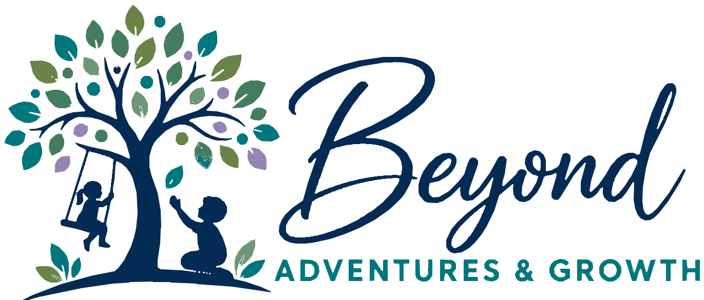

Respect for each person
Recognizing individual strengths, communication preferences, autonomy, and family priorities.

Join Our Team
A thoughtful team begins with people who listen, respect individuality, and care about the families they support.
We’re building our team. If you’d like to work with Beyond, tell us about your experience and the kind of role you’re looking for. We welcome general applications even when a specific position isn’t posted.
Preview the employment applicationRecognizing individual strengths, communication preferences, autonomy, and family priorities.
Listening, communicating clearly, and working within each team member’s responsibilities and qualifications.
Welcoming feedback, reflecting on practice, and bringing care and preparation to everyday work.
You’ll see a confirmation number when we receive your application. If your experience matches a future opening, our team may reach out to discuss the role, schedule, qualifications, and next steps. Applying doesn’t guarantee an interview or offer.
Email info@beyondadventuresandgrowth.com. When applications are open, please use the application for your work history and keep private documents out of email.